ECOS DE LOS RECUERDOS
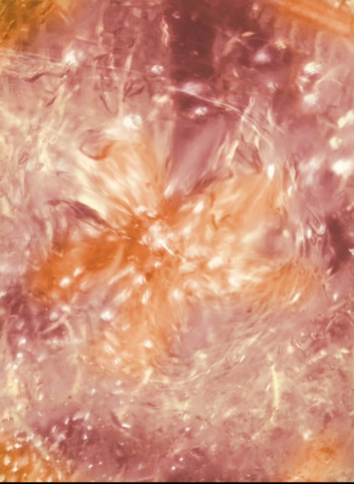
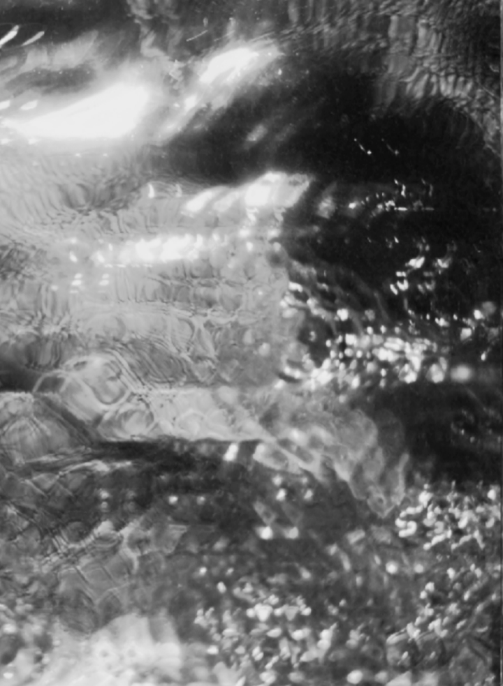
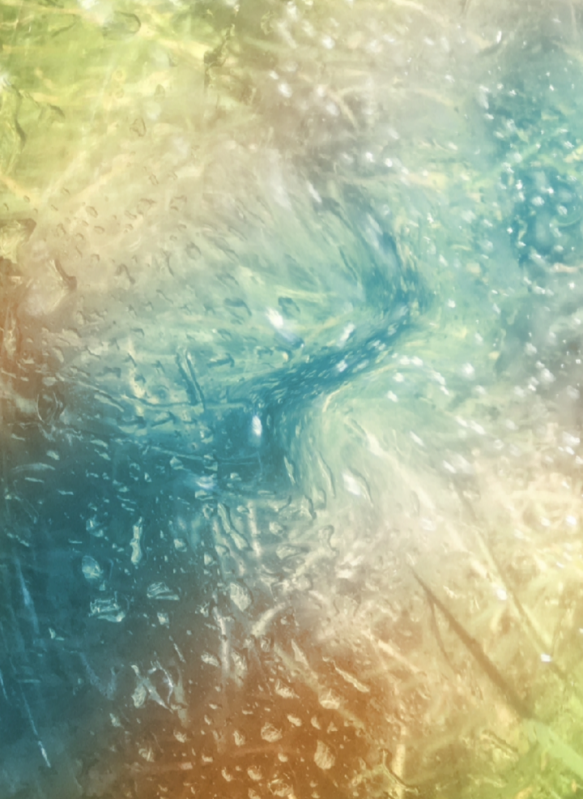
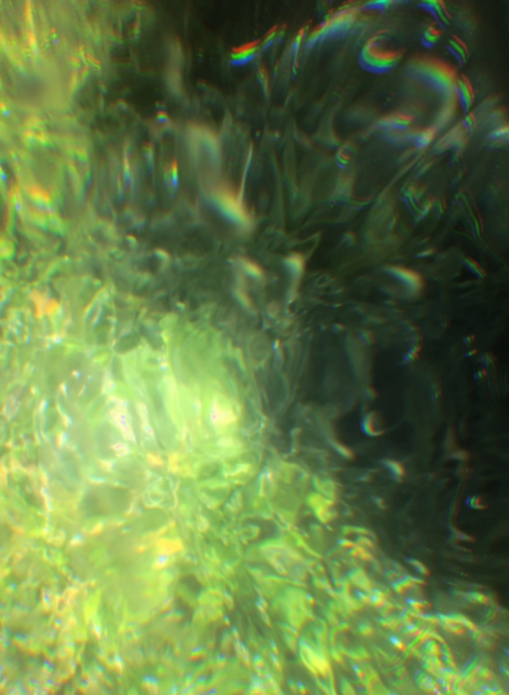
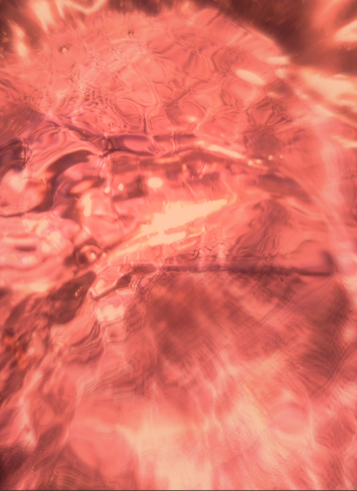
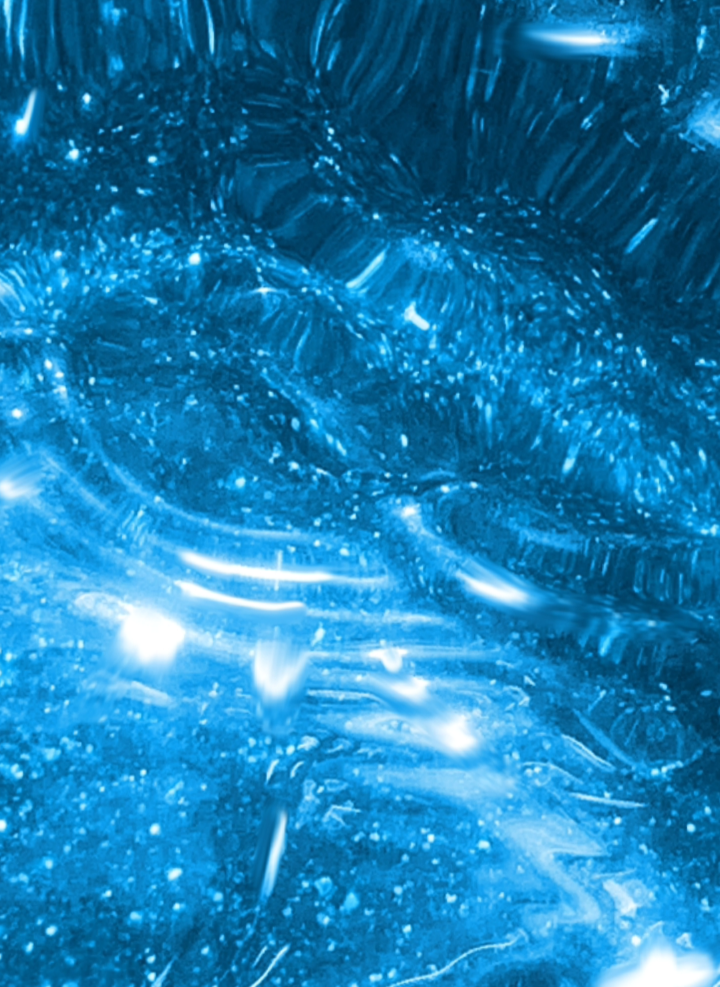
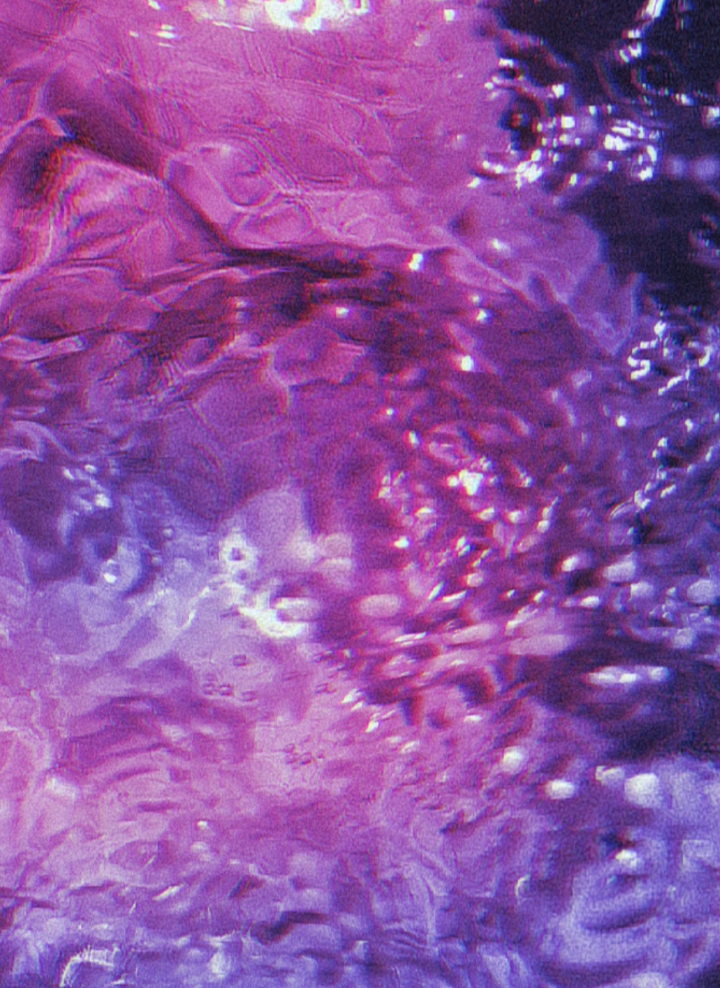
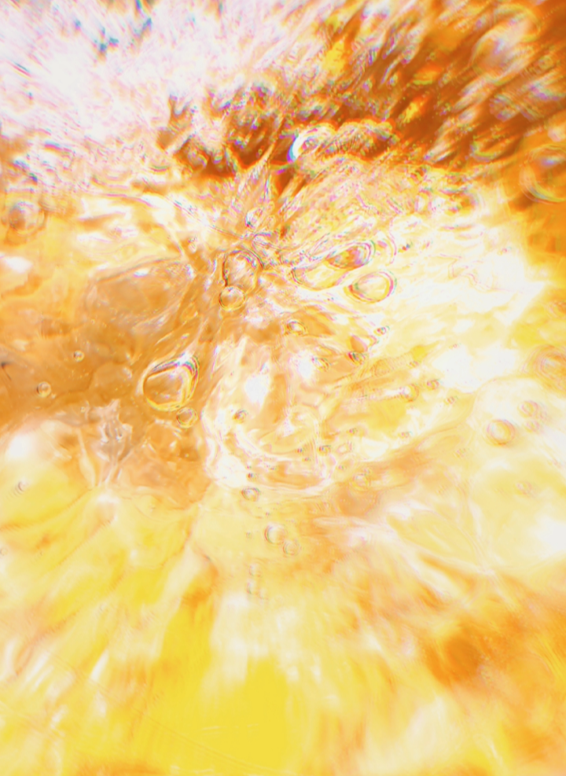
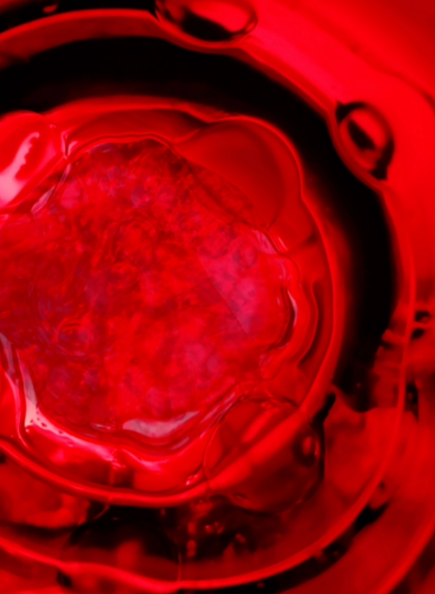
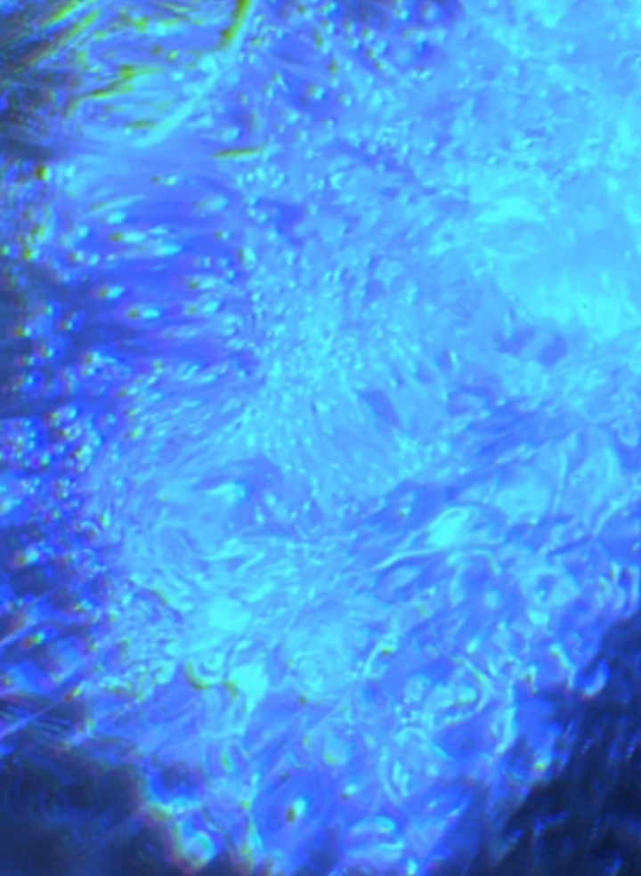
Serie fotografica a traves de sonidos
Nombre:Ecos de los recuerdos
Año: 2025
Descripción de la obra:
Esta serie de diez imágenes nombrada "Ecos de los recuerdos" es una obra audiovisual que mezcla elementos abstractos, y de experimentación, para crear un lenguaje narrativo propio. Estas imágenes lo que buscan, es reflejar los recuerdos y pensamientos a través de una forma no muy usual a lo que pensamos en cuanto dicen “recuerdos". Son imágenes abstractas que quieren capturar los “ecos” de los recuerdos y pensamientos a través de la fusión entre música y visual. Cada pieza es una traducción de una canción específica, expresando su emoción, y sentimientos transmitidos a través de colores, texturas y formas. Las imágenes actúan como portales que permiten acceder a fragmentos de memoria, no de manera literal, sino, a través de luces, formas y texturas que evocan sensaciones profundas. En lugar de representar escenas concretas, la serie se enfoca en transmitir estados emocionales, explorando la sinestesia entre el sonido y lo visual, donde cada pieza se convierte en un eco visual de lo que fue escuchado, sentido y transformado.
Fotos vacío
Año: 2026
Tuve la oportunidad de participar en un taller de fotografía experimental, en el cual hicimos obras análogas. Taller en el que tuvimos que tartar de hablar de nosotros a traves de las obras, más que fuera algo estetico, buscabamos el yo, en cada una de las obras. Al igual que pude experimentar usando cámaras fotográficas para realizar los trabajos en clase.
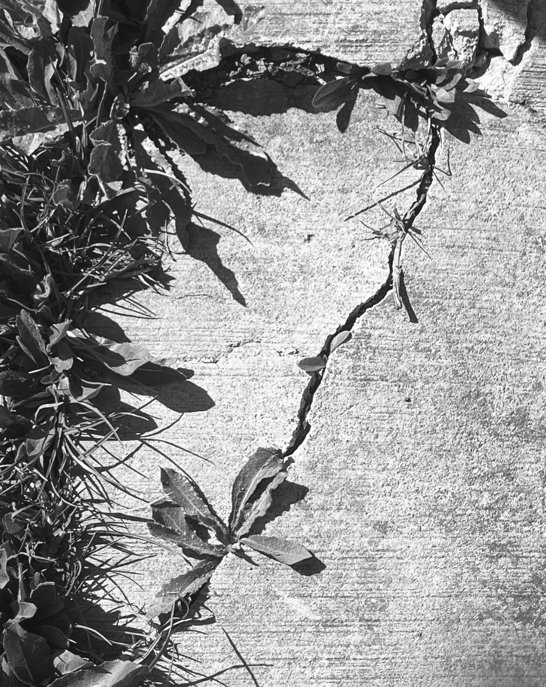
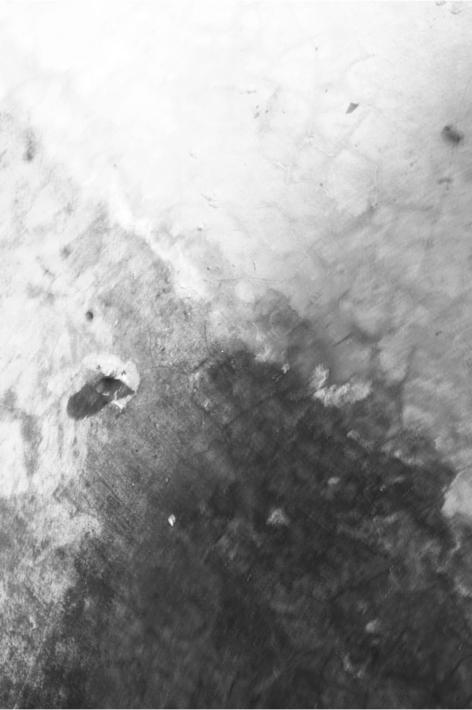
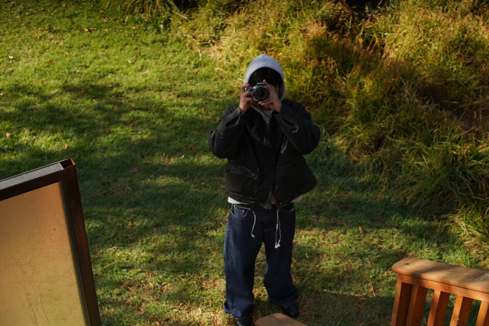